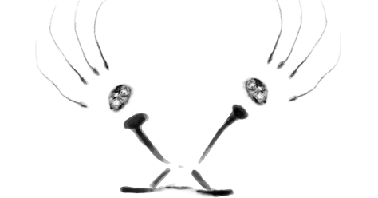

Můj první web

Tento web slouží k seznámení s mými dovednostmi a kontaktními informacemi.
Seznámení
Ahoj, jsem Martin. Vystudoval jsem SPŠ stavební. Mezi mé zájmy patří psychologie, umění a videohry.
Dovednosti
Game development, JavaScript, C#, HTML a CSS